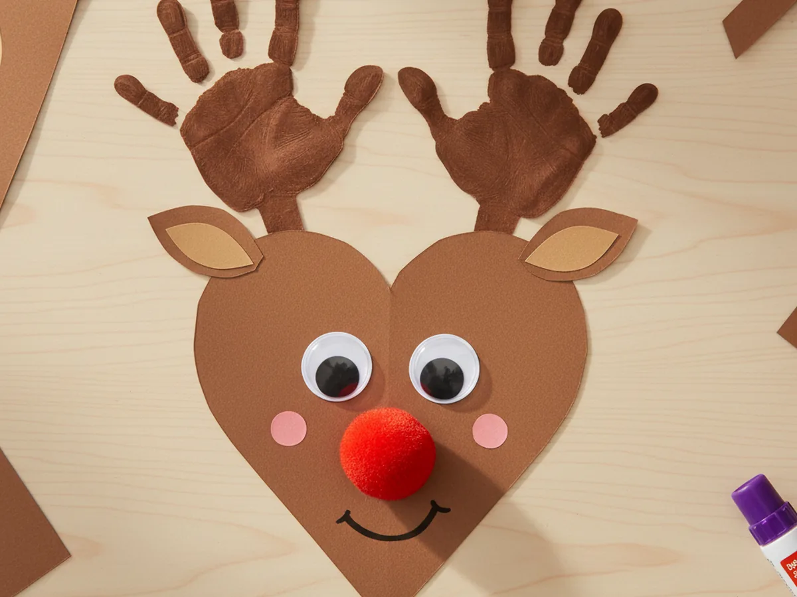
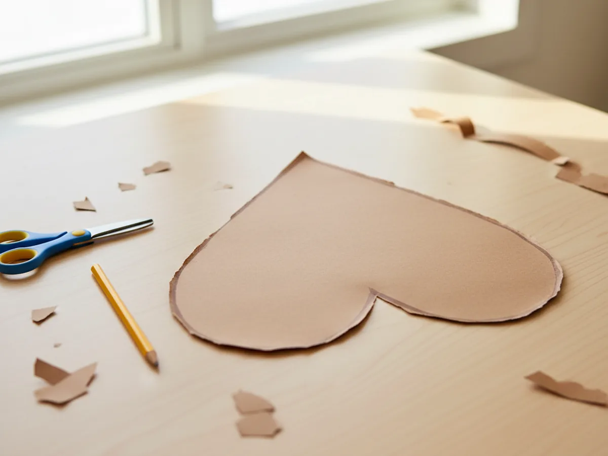
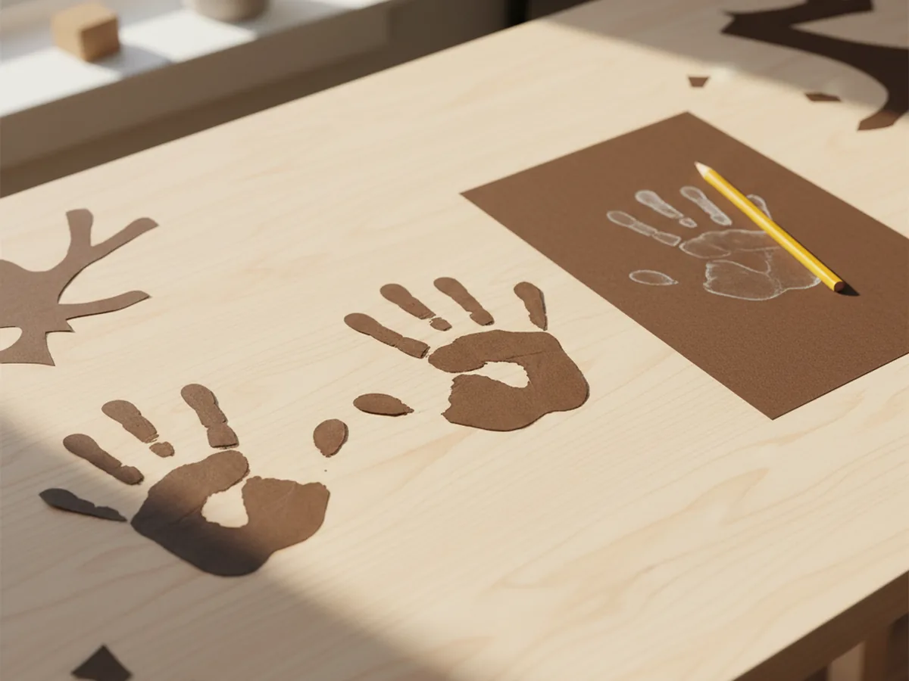
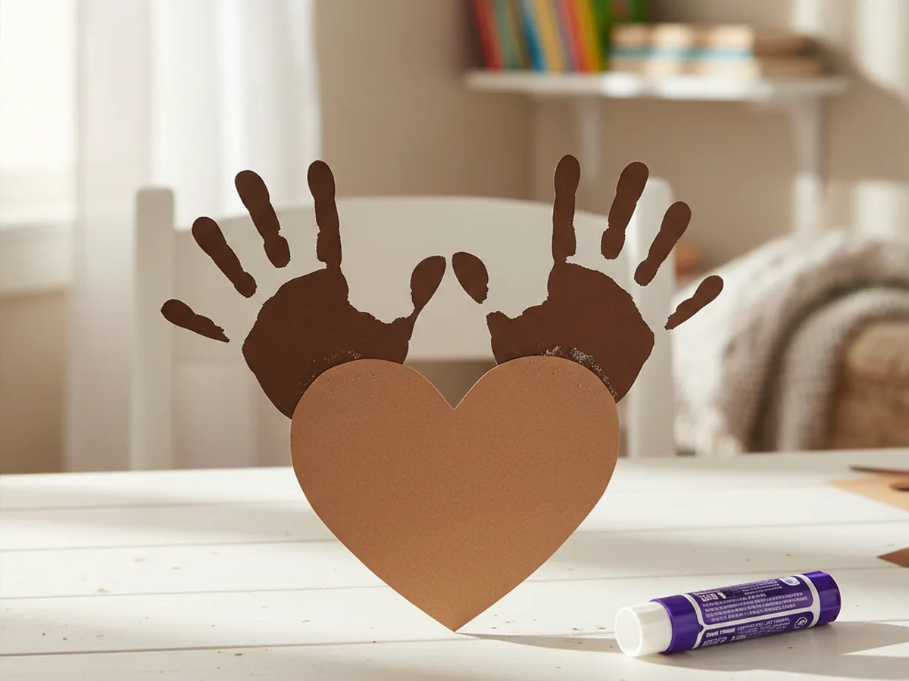
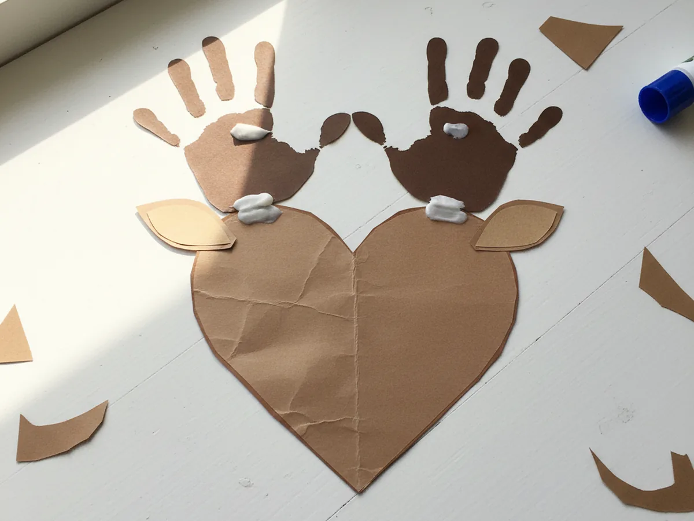
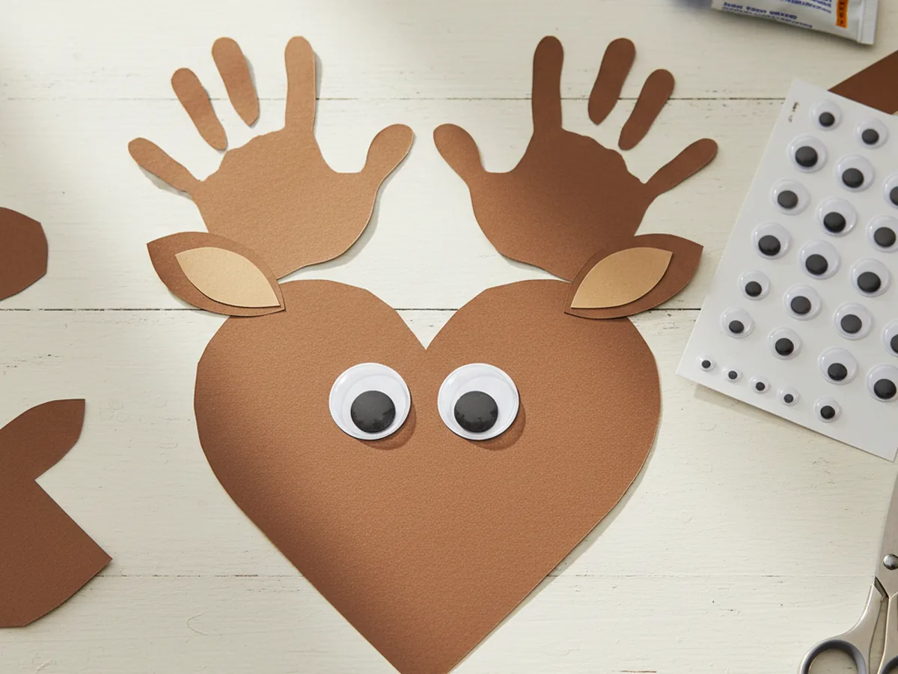
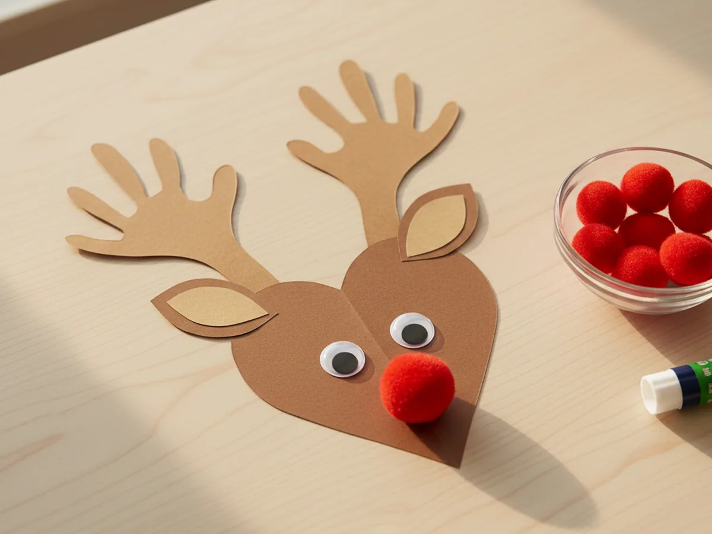
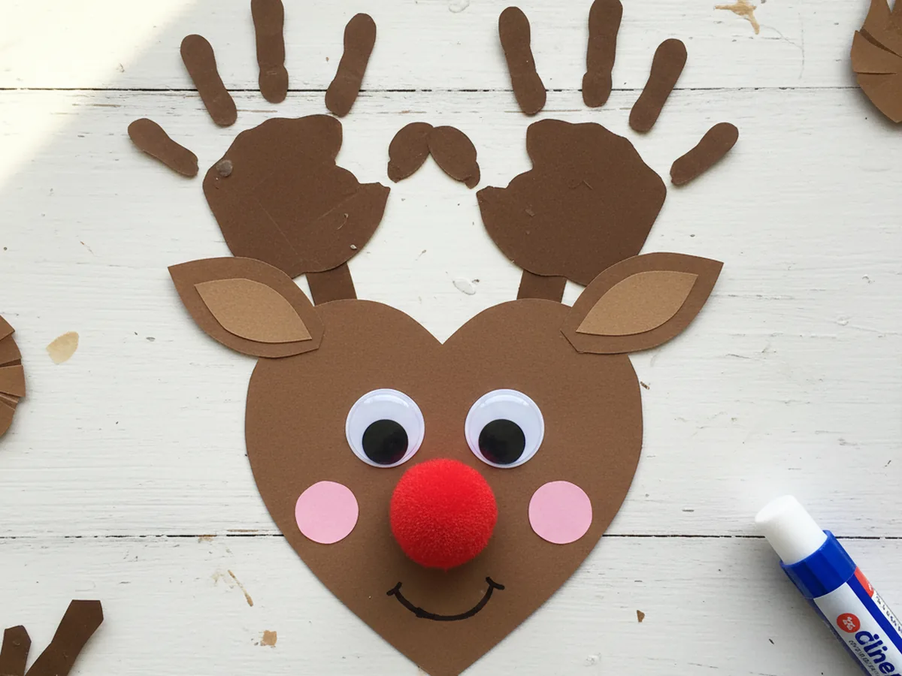

If your kids love anything reindeer related, this paper reindeer craft is going to feel like pure magic. It uses just a few simple pieces of construction paper, two googly eyes, and a fluffy red pom pom for that famous Rudolph nose. The whole project comes together in about 30 minutes and ends with the cutest handprint-antler reindeer face you have ever seen. 🦌
This easy paper reindeer craft works beautifully for the holiday season, but honestly your child will want to make one any time of year. The handprint antlers turn it into a sweet keepsake, and even toddlers can handle most of the steps with a little help. It is the kind of low-mess, low-stress activity that gives you a warm cozy afternoon together and a finished craft you will actually want to hang on the fridge.
Why Kids Love This Craft
Reindeer have a special place in every child's heart, especially around Christmas. Kids love the soft round face, the silly antlers, and that bright cheerful nose. This paper reindeer craft turns all of those magical details into something they can build with their own little hands, which feels almost like making a tiny friend.
The handprint antler step is the part most kids talk about for days afterward. Tracing their hand on paper feels like a fun game, and seeing their fingers turn into reindeer antlers makes them light up every single time. It is also a sweet way to capture the size of their hand at this age, which moms tend to treasure long after the season is over.
This activity is also wonderful for fine motor practice. Cutting out simple shapes, peeling googly-eye stickers, and pressing the pom pom firmly onto the paper all build hand strength and coordination. Best of all, every child finishes with a finished reindeer paper craft they feel proud to show off, which gives that warm "look what I made" feeling that makes the whole afternoon worthwhile. 💛
What You'll Need
Here is everything you need for this simple paper reindeer craft. Setting all the supplies on the table before you start keeps the activity calm and lets your little one jump right in.
- Crayola Construction Paper (240 sheets, assorted colors), includes the brown sheets you need for the face and antlers.
- CCINEE Self-Adhesive Googly Eyes (1150 pieces, assorted sizes), peel-and-stick eyes in fun sizes are perfect for tiny hands.
- Caydo Red Pom Poms (650 pieces, 3 sizes), the bigger size makes the perfect Rudolph nose.
- Fiskars Pointed-Tip Kids Scissors, sized for small hands and great for cutting curved shapes.
- Elmer's Disappearing Purple School Glue Sticks (30 pack), washable, easy to grip, and dry clear in a few minutes.
- Crayola Broad Line Markers (10 classic colors), for drawing the smile and adding small details.
- A pencil, for tracing the heart shape and your child's hand.
Step-by-Step Instructions
This paper reindeer craft tutorial moves through seven gentle steps that build on each other beautifully. Take your time, let your child do as much as they can, and enjoy watching the reindeer come to life piece by piece.
Step 1: Cut the Reindeer Face
Start with a sheet of brown construction paper. Draw a large heart shape that fills most of the page, then carefully cut it out with kid scissors. Once the heart is cut, flip it upside down so the rounded top becomes the forehead and the pointy bottom becomes the chin. That simple heart shape is the secret to a sweet reindeer face every single time.

Step 2: Trace and Cut the Handprint Antlers
Take a second sheet of brown construction paper, ideally a slightly darker shade if you have one. Have your child place both hands flat on the paper with fingers spread wide and trace around each one with a pencil. Then cut both handprints out carefully. These two little hand shapes will become the reindeer antlers, and the spread fingers look exactly like real antler points.
This is one of the sweetest moments of the whole paper reindeer craft. Take a quick photo of those tiny hand shapes before you glue them down. Future-you will thank you.

Step 3: Attach the Antlers
Flip the brown heart over so the back is facing up. Glue the bottom of each handprint to the top corners of the heart, with the fingers pointing up and out so they look like antlers branching off the reindeer head. Press firmly for a few seconds so the glue takes hold, then turn the whole thing back over to admire those gorgeous antlers.
If your child wants the antlers higher or lower, let them pick. Every reindeer looks slightly different, and that is exactly what gives this handprint reindeer craft all its charm. ✨

Step 4: Add the Inner Ears
From a piece of tan, beige, or light pink paper, cut two small teardrop shapes about the size of a thumbprint. These will be the inner ears. Glue one on each side of the head, just below the antlers, slightly tilted outward so they look natural. The contrast between the brown face and the lighter ears really makes the reindeer pop.

Step 5: Add the Googly Eyes
Now for the part that brings the reindeer to life. Peel two large googly eyes from the sticker sheet and press them onto the upper middle of the face, leaving a small space between them. As soon as the eyes go on, your child will gasp because the reindeer suddenly has a personality. Let them choose where the eyes look best, since slightly off-center eyes can look extra adorable.
If you do not have self-adhesive googly eyes, regular googly eyes work just as well with a small dot of glue. You can also draw two simple eyes with a black marker and add tiny white dots for shine.

Step 6: Glue on the Red Pom Pom Nose
Time for the most magical step. Pick out a fluffy red pom pom and add a generous dot of glue to the bottom point of the heart. Press the pom pom firmly into the glue and hold for a few seconds. Just like that, your reindeer becomes Rudolph, complete with that famous red nose. Watching your child light up at this moment is one of the sweetest payoffs in any craft. 🎄
If you do not have a red pom pom on hand, a small red paper circle or a red button works just as well. The goal is a bright pop of red right at the bottom point of the face.

Step 7: Add Finishing Touches
Your paper reindeer craft is almost done. To finish, draw a small smile under the nose with a black marker, and add two tiny pink or red cheek circles on either side for a soft blush. If you want to take it a little further, tie a small piece of red ribbon into a bow and glue it to the base of one of the antlers, or sprinkle a few tiny snowflake stickers around the face.
Hold the finished reindeer up together and admire your work. Your fridge, mantle, or front door is going to look extra sweet with this little Rudolph smiling back at you all season long.

Variations to Try
Reindeer Card Version: Glue your finished reindeer onto the front of a folded piece of cardstock to turn the craft into a holiday card. Have your child write a short note inside, then mail it to a grandparent or a special friend. It instantly becomes a sweet keepsake card with their handprint built right in.
Mini Reindeer Garland: Make three or four smaller reindeer using smaller paper hearts and tiny googly eyes, then string them together with a piece of twine or yarn taped to the back. Hang the garland across a doorway or above the mantle for an instant homemade holiday decoration.
Paper Bag Reindeer Puppet: Skip the flat paper version and glue all the same pieces (heart face, handprint antlers, eyes, pom pom nose) onto the front of a brown paper lunch bag. The bag's flap becomes the mouth and your child has a giggly reindeer puppet that can sing along to every Christmas song you know.
Final Thoughts
This paper reindeer craft is one of those projects that feels almost too easy for how much joy it sparks. It takes about 30 minutes, uses simple supplies you can keep on hand for many other projects, and gives you a finished reindeer that doubles as a sweet keepsake of your child's hand at this exact age. More than anything, it gives you both a warm, low-stress moment to slow down and create something cute together.
If your little one makes their own paper reindeer, I would love to see it. Save this article on Pinterest so other craft-loving mamas can find it easily. Happy crafting!
More Crafts You'll Love
If your child loved this paper reindeer craft, they will adore these other sweet Christmas paper crafts too: